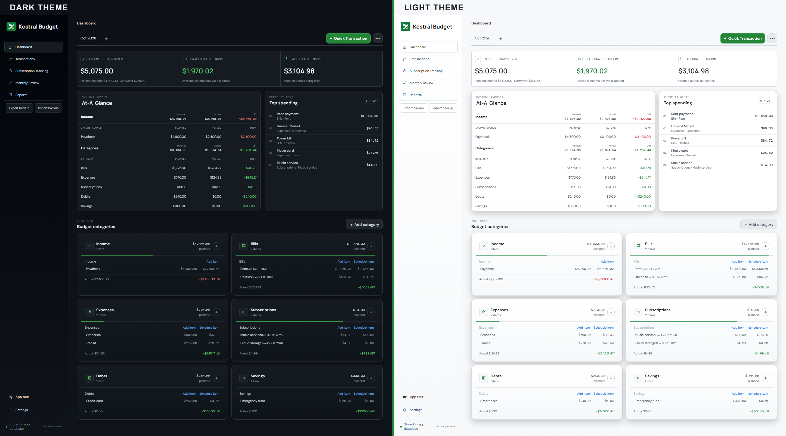
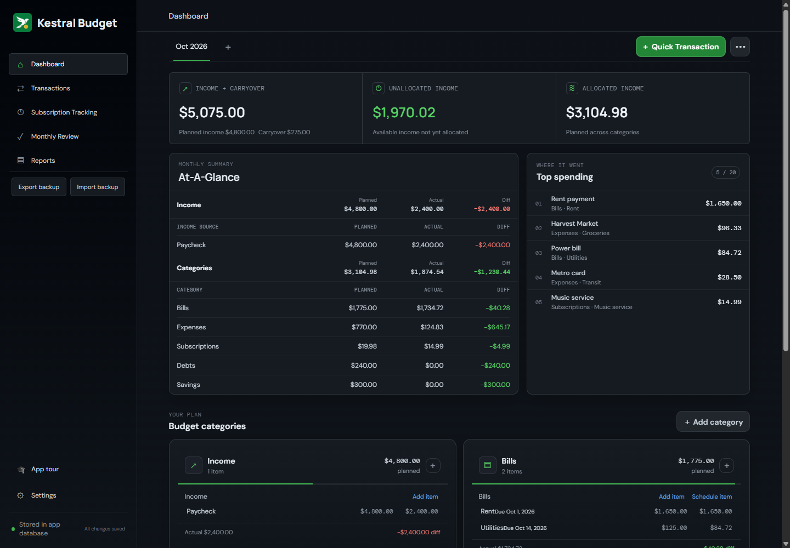
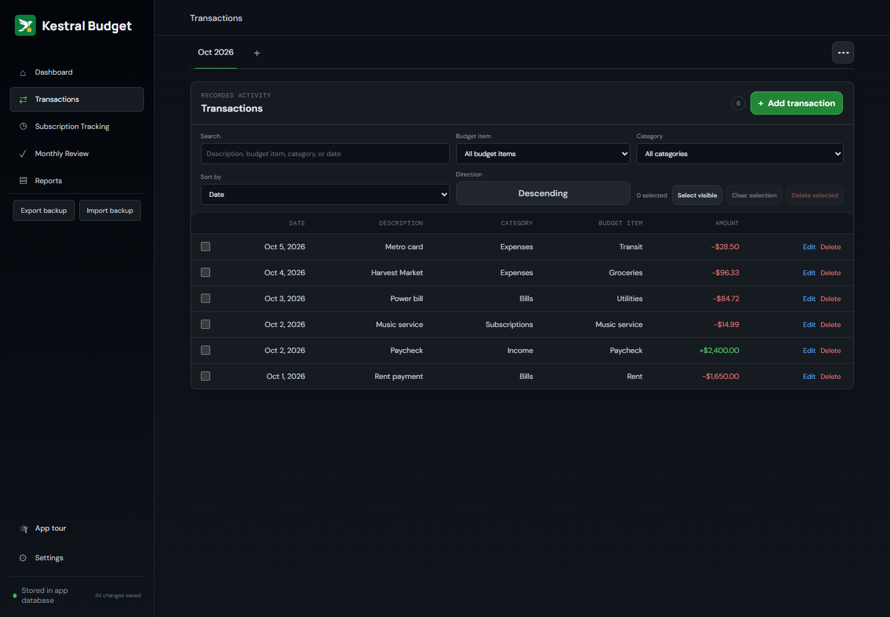
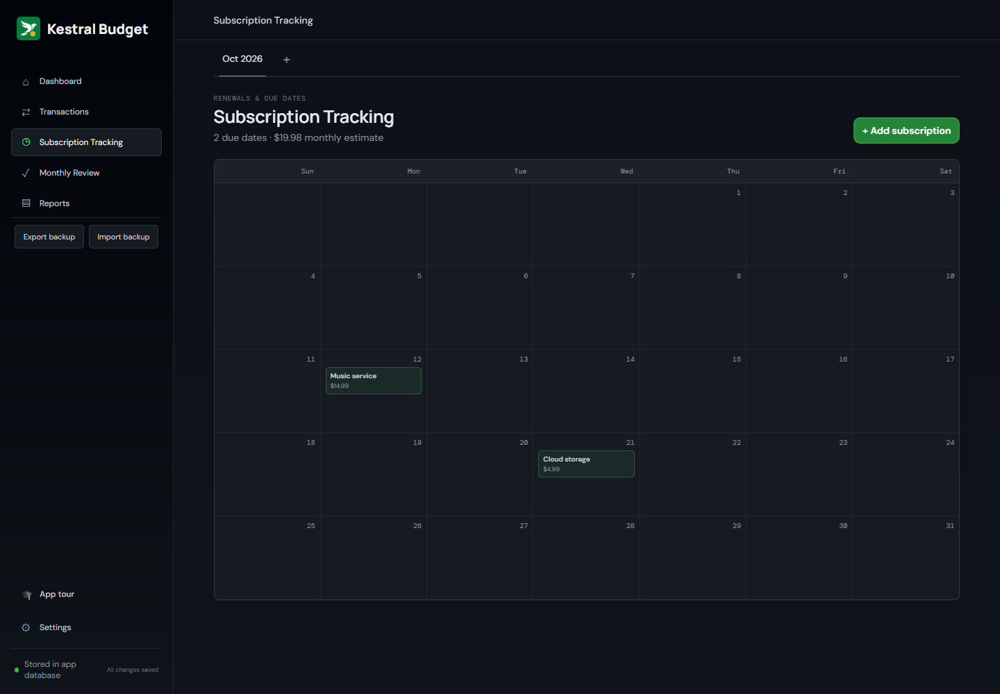
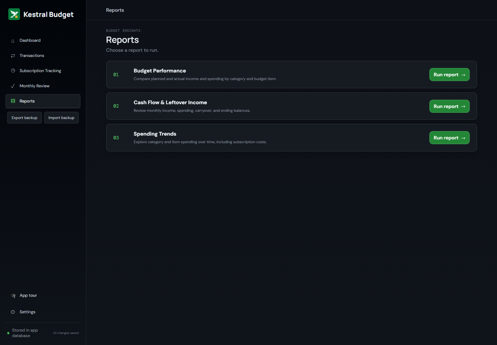

Plan and adjust
Set monthly targets, compare planned with actual income and spending, see unallocated income, and carry a balance forward when you choose.
Fast and lightweight, local-first budgeting with no bank connections, no cloud accounts, and no subscription fees.
Download the latest release Windows x64 · macOS Apple Silicon

Set monthly targets, compare planned with actual income and spending, see unallocated income, and carry a balance forward when you choose.
Organize with the categories, sections, and items that make sense to you. Choose your currency, date format, theme, and layout.
Log transactions against budget items, then search, filter, sort, and manage activity in bulk.
Add due dates to bills, subscriptions, and debts, and see upcoming subscriptions on a calendar.
Budget Performance, Cash Flow & Leftover Income, and Spending Trends reports show how your budget does over time.
Your data stays on your computer. No accounts, no bank connections, no cloud sync.
Screenshots use fictional sample data.




Free desktop app for Windows (x64) and macOS (Apple Silicon). Prefer to run it yourself? It can also be self-hosted with Docker.
Download the latest release Self-hosting instructions
Kestral has no automatic bank connections, cloud sync, or automatic backups. Export backups of important data regularly.